Candidate List 20261128Last night — ZTF: 1,228 passed basic cuts (42 young) · LSST: 439 passed basic cuts (30 young)Previous Day Next Day
Section 1: New Sources (age<1d) Section 2: Old (1-5d) sources observed last night Section 3: Already classified as a supernova on TNSplaceholder
Section 1: New Afterglow/FBOT Cands Last Night (3)
1. [ZTF] ZTF26aciydbl (Afterglow?) [Back to Top] [Share] [Trigger Swift] [Fritz Alert] [Fritz Source] [Lasair]RA, Dec: 22.43832, 30.41215 1h29m45.20s, 30d24m43.72sGalactic (l, b): 132.64635, -31.73583 ext(g-r) = 0.058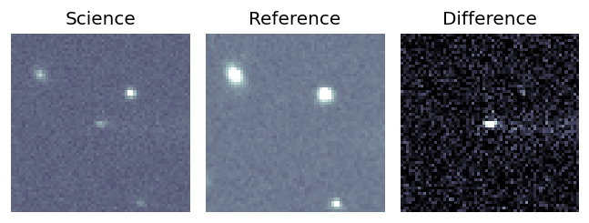
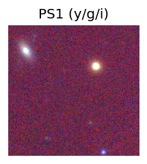
TESS: Sectors 17
PS1: 0 sources in 3 arcsec
LegacySurvey: 0 sources in 3 arcsec
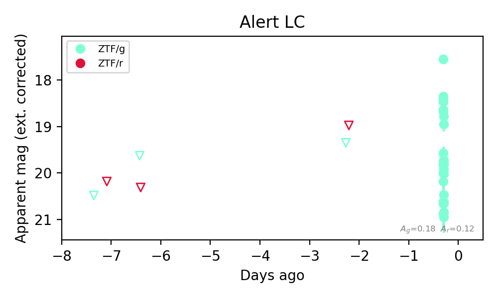
Rise Rate:
Fade Rate:
g: 176.34 mag/day
2. [ZTF] ZTF26aciydbz (Afterglow?) [Back to Top] [Share] [Trigger Swift] [Fritz Alert] [Fritz Source] [Lasair]RA, Dec: 23.77495, 30.31187 1h35m5.99s, 30d18m42.73sGalactic (l, b): 133.99983, -31.61979 ext(g-r) = 0.06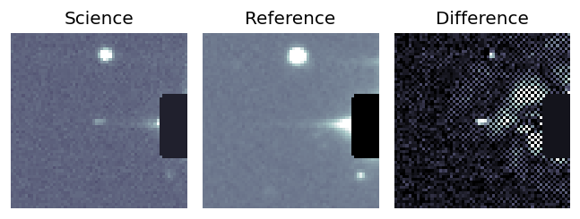
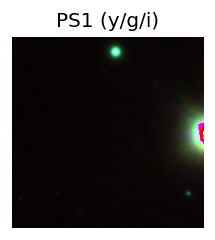
TESS: Sectors [17 57]
PS1: 0 sources in 3 arcsec
LegacySurvey: 0 sources in 3 arcsec
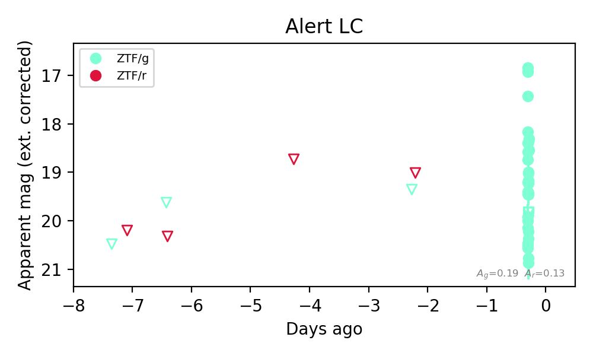
Rise Rate:
Fade Rate:
g: 160.63 mag/day
3. [ZTF] ZTF26aciydci (Afterglow?) [Back to Top] [Share] [Trigger Swift] [Fritz Alert] [Fritz Source] [Lasair]RA, Dec: 22.13388, 36.04855 1h28m32.13s, 36d 2m54.77sGalactic (l, b): 131.28367, -26.22087 ext(g-r) = 0.051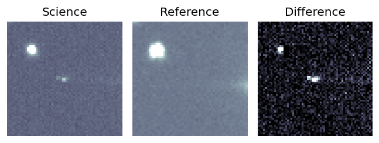
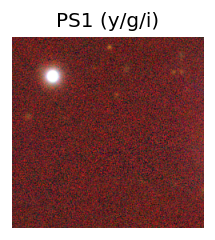
TESS: Sectors [17 85]
PS1: 0 sources in 3 arcsec
LegacySurvey: 0 sources in 3 arcsec
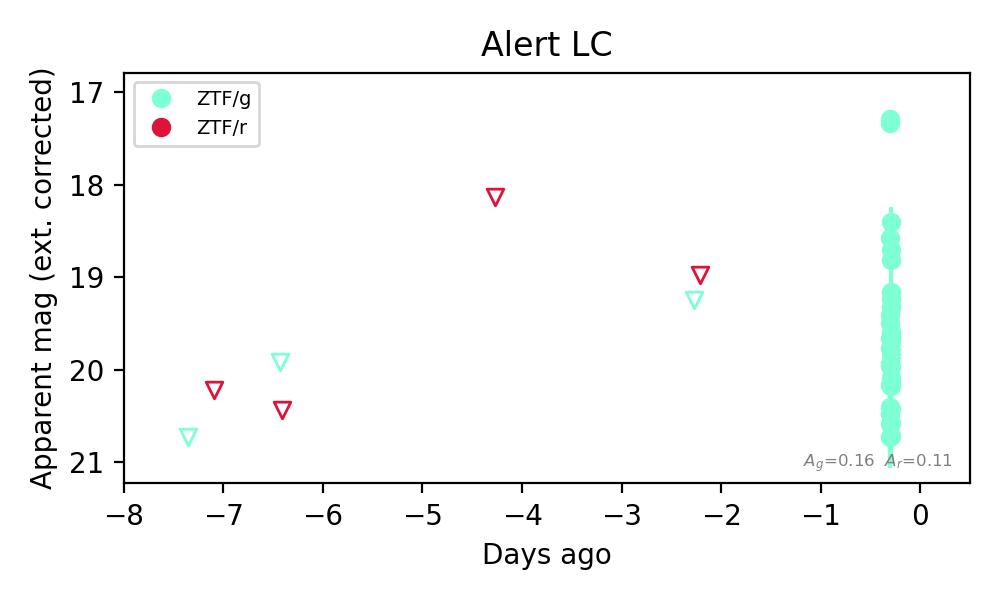
Rise Rate:
Fade Rate:
g: 157.1 mag/day
Section 2: Older Sources Observed Last Night (7)
1. [ZTF] ZTF26acirpva (Afterglow?) [Back to Top] [Share] [Trigger Swift] [Fritz Alert] [Fritz Source] [Lasair]RA, Dec: 98.56083, 58.25576 6h34m14.60s, 58d15m20.74sGalactic (l, b): 157.03432, 20.65092 ext(g-r) = 0.07Observed last night in r, not detected: limit 19.79 (5σ), 1.99 d after the last r detection at 19.02 → fading ≥ 0.39 mag/day.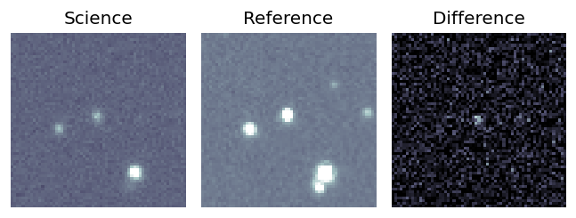
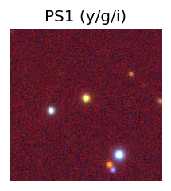
TESS: Sectors [20 60 73]
PS1: 0 sources in 3 arcsec
LegacySurvey: 0 sources in 3 arcsec
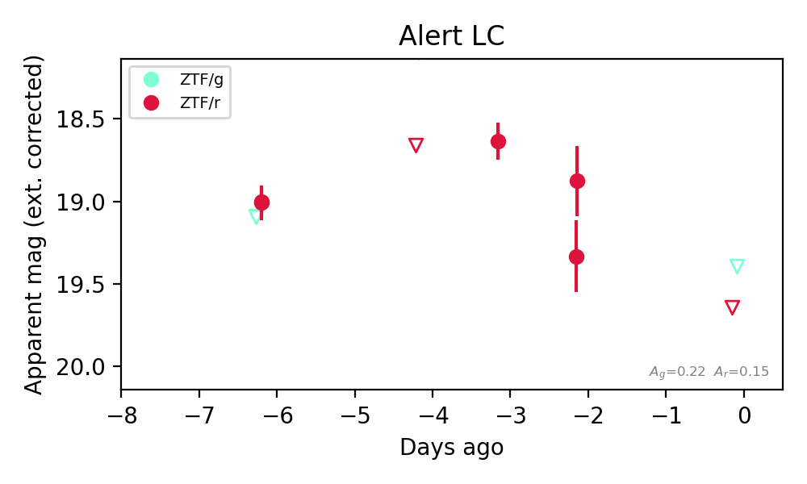
Extinction-corrected gr color:
From alerts: 0.09 +/- 99 mag
Rise Rate:
r: 0.3 mag/day
Fade Rate:
r: 0.39 mag/day
2. [ZTF] ZTF26acislay (Afterglow?) [Back to Top] [Share] [Trigger Swift] [Fritz Alert] [Fritz Source] [Lasair]RA, Dec: 148.40918, 13.1815 9h53m38.20s, 13d10m53.41sGalactic (l, b): 222.42219, 46.26683 WARNING: 0.36 deg from ecliptic plane ext(g-r) = 0.029Observed last night in r, not detected: limit 19.68 (5σ), 1.01 d after the last r detection at 17.88 → fading ≥ 1.79 mag/day.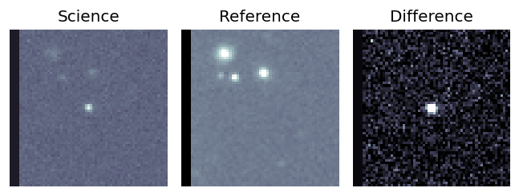
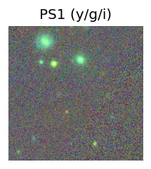
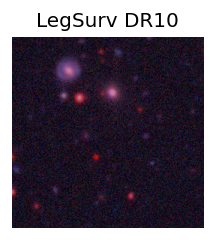
TESS: Sectors [45 72]
PS1: 1 source in 3 arcsec Closest: d = 9.94 arcsec photoz=0.94+/-0.21 peak abs mag = -26.18
LegacySurvey: 0 sources in 3 arcsec
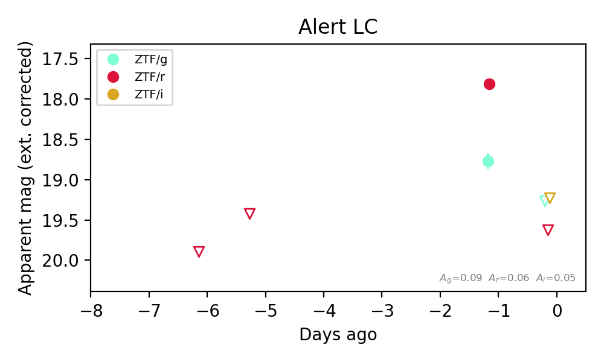
Extinction-corrected gr color:
From alerts: 0.95 +/- 0.1 mag
Consistent with synchrotron, g-r>0!
Rise Rate:
r: 0.42 mag/day
Fade Rate:
g: 0.5 mag/day
r: 1.79 mag/day
3. [ZTF] ZTF26aciimxs (Afterglow?FBOT?) (TNS: AT 2026aksq) [Back to Top] [Share] [Trigger Swift] [Fritz Alert] [Fritz Source] [Lasair]RA, Dec: 119.97364, -1.8159 7h59m53.67s, -1d-48m-57.24sGalactic (l, b): 222.57584, 14.31909 ext(g-r) = 0.035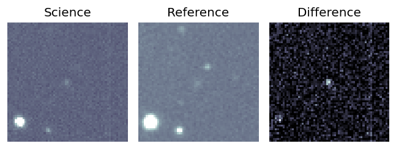

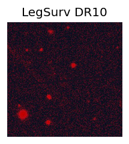
TESS: Sectors [ 7 34 61 88]
PS1: 1 source in 3 arcsec Closest: d = 0.58 arcsec photoz=0.21+/-0.38 peak abs mag = -21.58
LegacySurvey: 0 sources in 3 arcsec
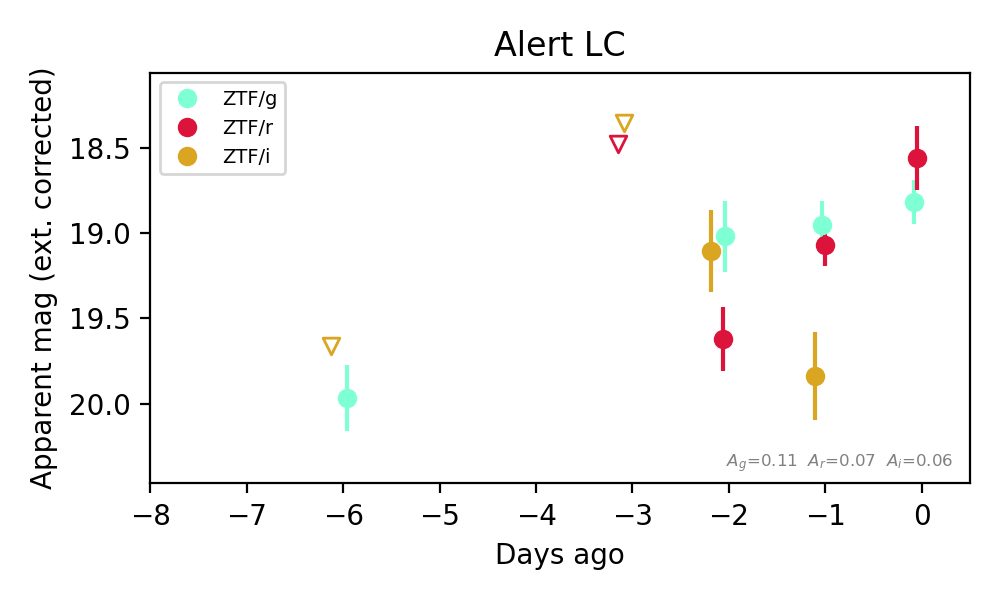
Extinction-corrected gr color:
From alerts: 0.26 +/- 0.23 mag
Extinction-corrected gi color:
From alerts: -0.88 +/- 0.29 mag
Extinction-corrected ri color:
From alerts: -0.77 +/- 0.29 mag
Consistent with synchrotron, g-r>0!
Rise Rate:
g: 0.19 mag/day
r: 0.53 mag/day
i: 0.14 mag/day
Fade Rate:
i: 0.68 mag/day
4. [ZTF] ZTF26acispwy (Afterglow?) (TNS: AT 2026akvr) [Back to Top] [Share] [Trigger Swift] [Fritz Alert] [Fritz Source] [Lasair]RA, Dec: 121.14455, -14.73671 8h 4m34.69s, -14d-44m-12.16sGalactic (l, b): 234.59553, 8.86182 ext(g-r) = 0.077Observed last night in g, not detected: limit 19.33 (5σ), 0.98 d after the last g detection at 18.87 → fading ≥ 0.48 mag/day.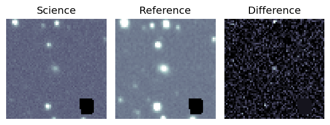
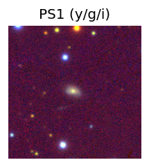
TESS: Sectors [ 7 61 88 112]
PS1: 1 source in 3 arcsec Closest: d = 1.18 arcsec photoz=0.12+/-0.02 peak abs mag = -20.26
LegacySurvey: 0 sources in 3 arcsec
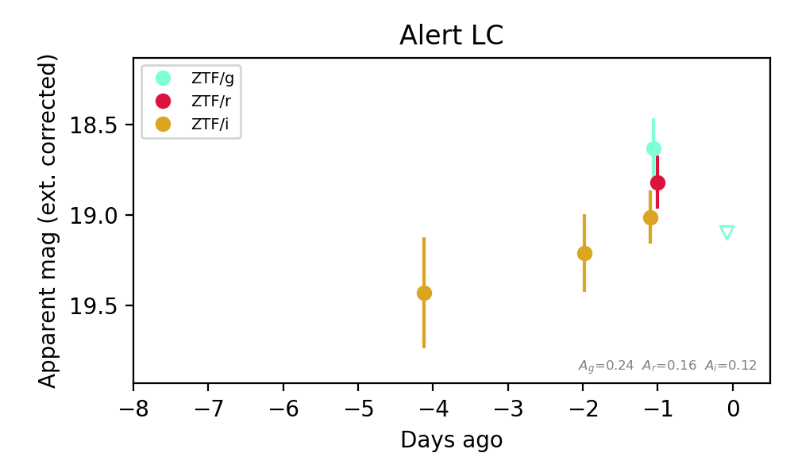
Extinction-corrected gr color:
From alerts: -0.19 +/- 0.22 mag
Extinction-corrected gi color:
From alerts: -0.38 +/- 0.22 mag
Extinction-corrected ri color:
From alerts: -0.19 +/- 0.21 mag
Consistent with synchrotron, g-r>0!
Rise Rate:
i: 0.03 mag/day
Fade Rate:
g: 0.48 mag/day
5. [ZTF] ZTF26acitpfh (FBOT?) [Back to Top] [Share] [Trigger Swift] [Fritz Alert] [Fritz Source] [Lasair]RA, Dec: 20.18824, 33.7274 1h20m45.18s, 33d43m38.65sGalactic (l, b): 129.88219, -28.74842 ext(g-r) = 0.064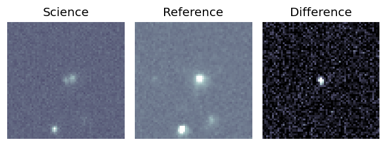
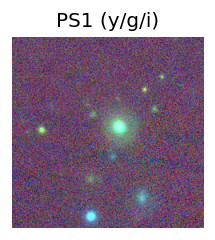
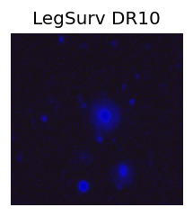
TESS: Sectors [17 57 84]
SDSS (<15 kpc):Found SDSS phot-z: z=0.09; peak abs mag = -19.04
PS1: 1 source in 3 arcsec Closest: d = 3.48 arcsec photoz=0.12+/-0.01 peak abs mag = -19.64
LegacySurvey: 0 sources in 3 arcsec
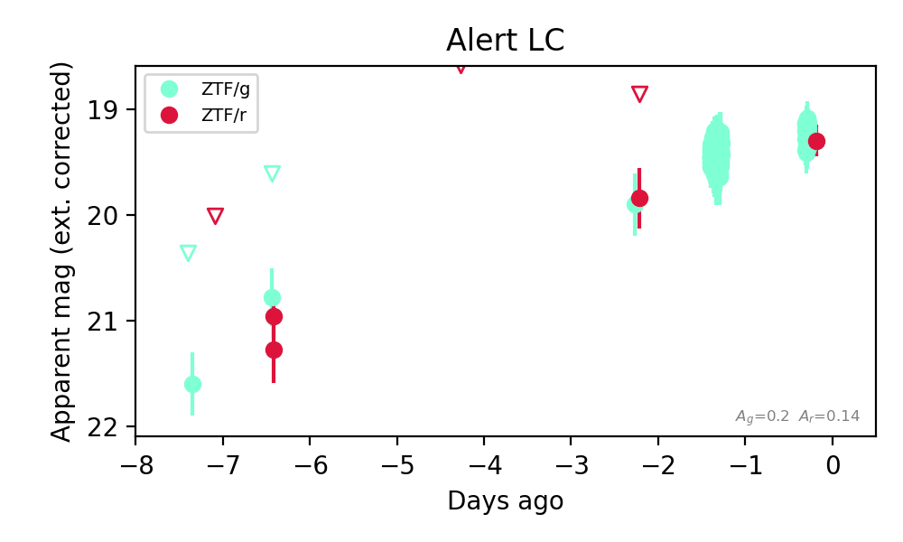
Extinction-corrected gr color:
From alerts: -0.07 +/- 0.15 mag
Consistent with synchrotron, g-r>0!
Rise Rate:
g: 0.21 mag/day
r: 0.28 mag/day
Fade Rate:
6. [ZTF] ZTF26aciwtle (FBOT?) (TNS: AT 2026akvl) [Back to Top] [Share] [Trigger Swift] [Fritz Alert] [Fritz Source] [Lasair]RA, Dec: 164.33567, 76.04573 10h57m20.56s, 76d 2m44.64sGalactic (l, b): 131.46904, 39.13093 ext(g-r) = 0.074

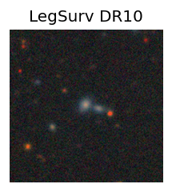
TESS: Sectors [ 14 20 21 40 41 47 53 60 74 119 120]
SDSS (<15 kpc):Found SDSS phot-z: z=0.11; peak abs mag = -20.19
PS1: 1 source in 3 arcsec Closest: d = 0.28 arcsec photoz=0.09+/-0.05 peak abs mag = -19.76
LegacySurvey: 0 sources in 3 arcsec
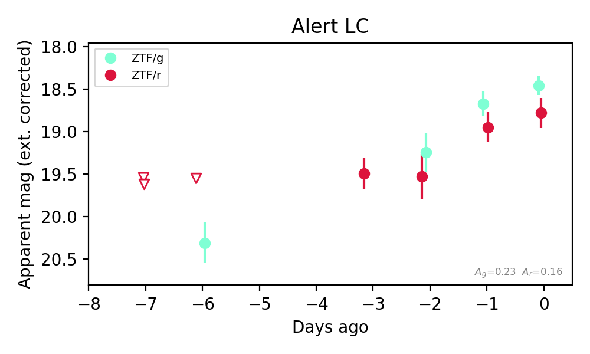
Extinction-corrected gr color:
From alerts: -0.33 +/- 0.21 mag
Rise Rate:
g: 0.32 mag/day
r: 0.25 mag/day
Fade Rate:
7. [ZTF] ZTF26acixuqx (Afterglow?) [Back to Top] [Share] [Trigger Swift] [Fritz Alert] [Fritz Source] [Lasair]RA, Dec: 188.15411, 6.79753 12h32m36.99s, 6d47m51.10sGalactic (l, b): 289.68134, 69.18365 ext(g-r) = 0.022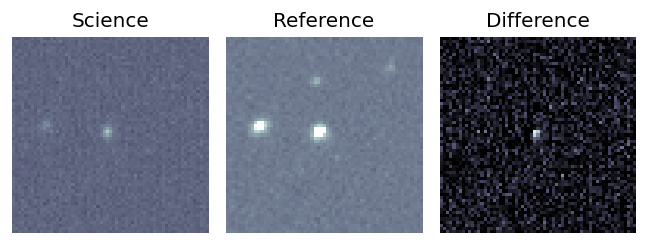
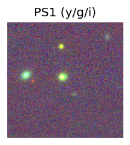
TESS: Sectors [ 23 46 91 115]
SDSS (<15 kpc):Found SDSS phot-z: z=0.31; peak abs mag = -22.15
PS1: 0 sources in 3 arcsec
LegacySurvey: 0 sources in 3 arcsec
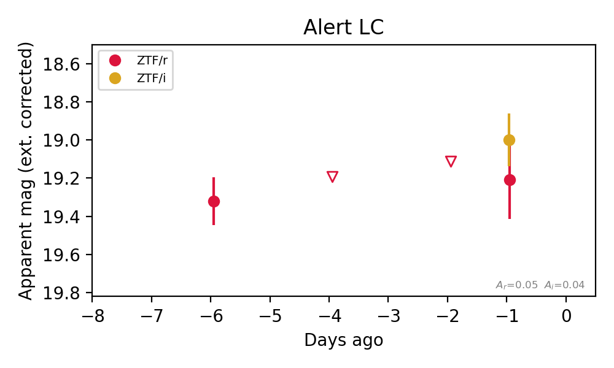
Extinction-corrected gr color:
From alerts: 1.19 +/- 99 mag
Extinction-corrected gi color:
From alerts: 1.15 +/- 99 mag
Extinction-corrected ri color:
From alerts: 0.21 +/- 0.25 mag
Consistent with synchrotron, g-r>0!
Rise Rate:
r: 0.01 mag/day
i: 0.02 mag/day
Fade Rate:
i: 0.22 mag/day
Section 3: Already classified as a supernova on TNS (1)
show 1 classified source(s)
1. [ZTF] ZTF26acibtjn (FBOT?) (TNS: SN 2026aksd — SN Ia, z=0.0597, reported) [Back to Top] [Share] [Trigger Swift] [Fritz Alert] [Fritz Source] [Lasair]RA, Dec: 144.9723, 27.49378 9h39m53.35s, 27d29m37.61sGalactic (l, b): 200.95289, 47.7247 ext(g-r) = 0.024
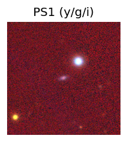

TESS: Sectors [21 45 48]
SDSS (<15 kpc):Found SDSS phot-z: z=0.10; peak abs mag = -20.12
PS1: 1 source in 3 arcsec Closest: d = 0.33 arcsec photoz=0.11+/-0.05 peak abs mag = -20.33
LegacySurvey: 0 sources in 3 arcsec
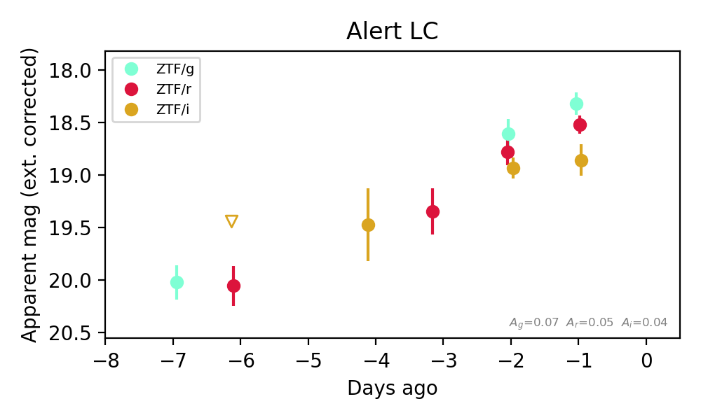
Extinction-corrected gr color:
From alerts: -0.2 +/- 0.14 mag
Extinction-corrected gi color:
From alerts: -0.54 +/- 0.19 mag
Extinction-corrected ri color:
From alerts: -0.34 +/- 0.17 mag
Rise Rate:
g: 0.29 mag/day
r: 0.31 mag/day
i: 0.12 mag/day
Fade Rate: